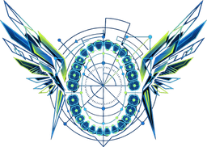

ArkAng-ELLa chirurgia implantare non ha bisogno di una TC. Ha bisogno di geometria.
Il chirurgo legge pochi parametri con il righello, la suite sintetizza l'arcata in tre dimensioni e restituisce una mesh pronta per il CAD. Zero-DICOM, zero cloud, zero attese.
X destra, Y antero-posteriore, Z occlusale
La cresta non è piatta. È un dato di progetto.
Sella concava, cratere post-estrattivo e deiscenza buccale non sono errori da correggere a mano: sono imperfezioni che il motore scava fisicamente nella spline e nell'STL.
− |ΔZdef| · exp(−(x − xc)² / 2σx²)
− |ΔWdef| · exp(−(x − xc)² / 2σx²)
La stessa geometria alimenta il cockpit WebGL e il file esportato per l'odontotecnico.
Se l'osso scende, il MUA sale.
Affondamento subcrestale e colletto transmucoso si compensano. Tutti i camini emergono sullo stesso piano protesico, anche su una cresta irregolare.
Nessun impianto entra nel nervo.
Il loop mentoniero e i pin della mascherina sono segmenti finiti nello spazio. La distanza minima è calcolata in forma chiusa e corretta prima dell'esportazione.
− Rimpianto − Rtarget
Il vincolo non è una stima voxel: è la distanza esatta tra due segmenti sghembi.
Il carico si decide in micrometri.
Dalla densità Hounsfield al verdetto sul carico immediato: il modello combina classe ossea, spread antero-posteriore e cantilever in un'unica soglia biologica.
· (1 + 0,35 · Lcant / AP)
Il dip critico si prevede, non si subisce.
La stabilità primaria scende mentre quella secondaria sale. TimesFM 2.5 legge la traiettoria ISQ e proietta il consolidamento settimana per settimana, con bande q10–q90.
+ Abio / (1 + e−(t−t0)/k) · D(t) − Poverload(t)
133 casi, un solo forward pass.
TabPFN v2 legge l'intero corpus clinico in-context e restituisce tilt, dip ISQ e torque senza retraining. Il consenso fra sei modelli diventa un prior locale.
TabPFNθ(xquery, {(xi, yi)i=1..133})
Zero cloud. Zero pesi scaricati a runtime.
La mano del chirurgo diventa un parametro.
Ogni operatore inclina, accorcia e margina in modo diverso. Il registro dei casi operati addestra una Ridge L2 in forma chiusa e sincronizza i prior usati dal cockpit.
Il modello non sostituisce la mano: la rende ripetibile e verificabile.
Ogni calcolo lascia una traccia verificabile.
Telemetria, sei guardrail, model drift e Monte Carlo. Il sistema dichiara che cosa ha fatto, con quale margine e con quale livello di confidenza.
clearance ≥ 2,0 mm su ogni iterazione
Tutto dentro una cartella. Anche l'AI.
Runtime Python, pesi TimesFM e TabPFN, dataset, cockpit, ML Studio e documentazione. Si copia su una chiavetta e si apre sulla workstation clinica, senza installare nulla.
runtime · models · data · web
Un prodotto TrinAI · ArkAng-EL, progettato per l'eccellenza chirurgica.